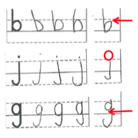

Current & Past Research

Medical Imaging
-
February 2016 - Present
- Worked at the I-STAR Lab
- Experimented with combining infrared markers & radigraphic imaging
- Became familiar with surgical tracking systems & c-arm imaging

Fetal Heartrate Monitoring
-
November 2014 - Present
- Leading team of undergraduates to design a low cost tocodynomometer & fetal heart rate monitor
- Improved my understanding of signal processing and circuitry
Patient Information Access
-
April 2016 - Present
- Working with team of undergraduates identifying patient needs in the clinical landscape
- Once needs have been finalized, will begin work on potential solutions

Computational Genomics
-
September 2015 - December 2015
- Analyzed DNA & RNA sequencing data from human cells with & without epilepsy
- Attempted to determine if a distinction in gene expression could be found

Handwriting Assessment
-
February 2015 - May 2015
- Wrote tablet app to record & analyze handwriting data from autistic children
- Became familiar with mobile tablet development & handwriting analysis
- IMFAR poster here

Contraceptive Implant Training
-
November 2014 - May 2015
- Worked with a team of undergraduates to conceive a low-cost modular contraceptive implant training tool for developing countries
- CITT kit for short